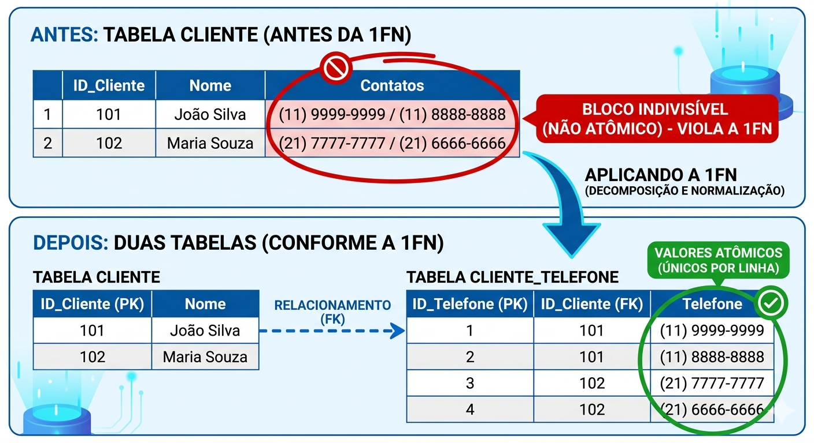
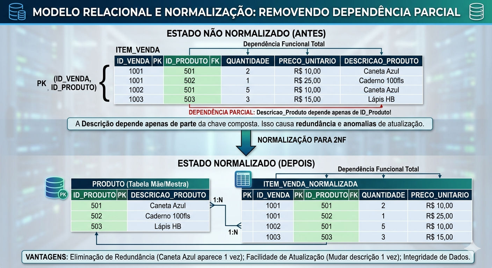

Descrição: Compreender o conceito de dependência funcional para identificar redundâncias e anomalias, aplicando na prática a normalização até a primeira (1FN) e segunda (2FN) formas normais.
Imaginem que nós fomos contratados como Analistas de Sistemas por uma grande rede de varejo.
O cliente nos envia um "relatorião sujo" de Excel gigante com todas as vendas de 2025. Cada vez que um produto muda de nome ou preço, o analista precisa dar um "Localizar e Substituir" em 50.000 linhas de vendas.
Se ele esquecer de atualizar uma única linha, o financeiro entra em colapso.O mercado de tecnologia lida com essa "sujeira" e redundância de dados diariamente, o que gera anomalias crônicas e prejuízos operacionais.
O alicerce da integridade dos dados.
O que é Dependência Funcional (DF)?
De forma simples, a DF ocorre quando o valor de uma coluna define obrigatoriamente o valor de outra coluna. Se você conhece o "X", você automaticamente descobre o "Y".
A Dependência Funcional é a regra que diz que certas informações estão "amarradas" umas às outras. Entender essas amarras é o que permite organizar os dados em tabelas perfeitas (Normalização).
Pense em uma tabela de pessoas: Se eu te der o número do CPF (X), você consegue me dizer exatamente qual é o Nome (Y) daquela pessoa.
Dizemos que: CPF → Nome.
O contrário nem sempre é verdade (existem muitas pessoas com o mesmo nome, então o Nome não determina o CPF).
A DF serve para garantir a saúde dos dados. Se não respeitarmos essas regras, o banco de dados adoece com as chamadas anomalias:
Visualizem uma seta saindo do campo CPF e apontando para o Nome. O CPF é o determinante. Sabendo o CPF, o banco de dados tem a certeza matemática de qual é o Nome.
Criando uma tabela para demonstrar a Dependência Funcional:
A Regra de Ouro: Um lugar para cada coisa.
A Normalização é o processo de organizar as colunas e tabelas para garantir que as Dependências Funcionais sejam respeitadas. O objetivo é evitar a redundância (repetir dados) e as anomalias.
A Regra de Ouro: "Um lugar para cada coisa"
Em um banco de dados bem projetado, cada fato deve ser armazenado em apenas um lugar. Se um atributo depende de uma chave, ele deve estar na tabela daquela chave.
Exemplo de uma tabela não normalizada:
| ID_Venda | Produto | Categoria_Produto | Preço |
|---|---|---|---|
| 1 | Teclado | Periféricos | 150 |
| 2 | Mouse | Periféricos | 80 |
| 3 | Teclado | Periféricos | 150 |
Note que a Categoria_Produto depende do Produto (Produto -> Categoria).
Se você precisar mudar o nome da categoria "Periféricos" para "Acessórios", terá que alterar várias linhas. Se esquecer uma, o banco de dados fica inconsistente.
Nós "quebramos" a tabela para respeitar as Dependências Funcionais:
| ID_Prod (X) | Nome | Categoria (Y) |
|---|---|---|
| 101 | Teclado | Periféricos |
| 102 | Mouse | Periféricos |
| ID_Venda | ID_Prod | Data |
|---|---|---|
| 1 | 101 | 10/10 |
| 2 | 102 | 11/10 |
Para um esquema ser considerado "virtuoso", ele geralmente segue estes níveis:
1ª Forma Normal (1FN): Sem grupos repetidos. Cada célula tem apenas um valor (nada de "Lista de telefones" em uma única célula).
2ª Forma Normal (2FN): Já está na 1FN e todos os atributos dependem da chave inteira, não apenas de parte dela (importante em chaves compostas).
3ª Forma Normal (3FN): Já está na 2FN e não existem dependências "transitivas" (tipo: A determina B, que determina C. O C deve sair dali e ir para outra tabela).
Atomicidade e a eliminação de grupos repetitivos.
A 1FN exige uma única regra de ouro: a atomicidade. Todo cruzamento de linha e coluna deve conter um dado atômico, ou seja, único e indivisível, eliminando qualquer grupo repetitivo ou atributo multivalorado.
Não podemos ter uma célula com vários e-mails ou telefones. Quando detectamos um atributo multivalorado, como um Telefone, devemos transformar em uma nova entidade (ou tabela auxiliar).
O design deve seguir a regra do dado mínimo: "tudo o que é necessário está lá, e tudo o que está lá é necessário".
Visualizem uma tabela Cliente com uma coluna Contatos contendo os números "(11) 9999-9999/(11) 8888-8888". Ao aplicar a 1FN, nós "quebramos" esse bloco indivisível.
Criamos uma tabela Cliente_Telefone, onde cada linha armazena apenas um único número por cliente, ligando-os via Foreign Key (FK).

O fim da Dependência Parcial.
O teste e aprofundamento da 2FN só podem ser aplicados a tabelas que já estão na 1FN e que possuem obrigatoriamente Chaves Primárias Compostas (duas ou mais colunas formando a PK).
O objetivo da 2FN é erradicar a Dependência Parcial. Isso significa que todos os atributos não-chave da tabela devem depender da chave primária inteira, e não apenas de um "pedaço" dela.
Se um campo como "Nome do Produto" depende apenas do "ID_Produto" e ignora o "ID_Pedido" em uma tabela associativa, nós dividimos a tabela.
Imaginem a entidade relacional Item_Venda com a chave composta (ID_Venda, ID_Produto). Se a coluna Descricao_Produto estiver dentro dessa tabela, ela depende parcialmente da chave (apenas do ID do Produto).
A normalização arranca a descrição daí e cria a tabela mãe Produto isolada.

Esclarecendo pontos comuns sobre normalização.
Exercícios para entrega no AVA.
Descrição: Analise a coluna Habilidades: "Java, Python, C++". Explique, em dois parágrafos, por que esse campo não está na 1FN e qual a consequência disso para pesquisas no banco de dados.
Entrega:Texto com a explicação técnica.
Descrição: Dada a tabela associativa Alocacao_Projeto (ID_Dev, ID_Proj, Horas_Atribuidas, Nome_Projeto), identifique qual é a Chave Primária Composta e quem é o "intruso" gerando dependência parcial.
Entrega:Texto apontando as chaves e o intruso.
Descrição: Escreva um script SQL que transforme a modelagem falha Empresa (CNPJ, Nome, Diretores_Multivalorados) em um banco aderente à 1FN.
Entrega:Script SQL (DDL) com CREATE TABLE e relacionamentos (FK).
Descrição:Leia o seguinte comando: CREATE TABLE Pedido_Prod (ID_Ped INT, ID_Prod INT, Valor_Unitario DECIMAL, PRIMARY KEY(ID_Ped, ID_Prod));. Avalie e explique se Valor_Unitario fere a 2FN.
Entrega:Parecer técnico documentado.
Descrição: Um sistema hospitalar possui a tabela Plantao (ID_Medico, ID_Ala, Data_Plantao, CRM_Medico). Refatore essa estrutura para a 2FN.
Entrega:Script DDL criando as tabelas corretas.
Descrição: Realize o processo passo a passo com os dados [Matricula_Aluno, Nome_Aluno, ID_Disciplina, Nome_Disciplina, Nota_Final], garantindo decomposição da 1FN até a 2FN (Script DDL).
Entrega:Script DDL em SQL das 3 tabelas resultantes.
Descrição: Projete a estrutura DDL (até a 2FN) para gerenciar "Clientes, Múltiplos Endereços de Entrega, e Itens de Compra". Cuidado com dependências parciais.
Entrega:Script DDL (Mínimo de 4 tabelas conectadas).
Descrição: Crie uma tabela Biblioteca_Suja unindo Autor, Nacionalidade e Livro. Mostre, com INSERT e DELETE, como anomalias destroem os dados sem a 2FN.
Entrega:Código SQL da tabela, das transações DML falhas e uma breve explicação do desastre.
Descrição: Modele desde a 0FN até a 2FN um sistema onde um Aluno registra "Certificados_Anteriores" (multivalorado) ao se matricular.
Entrega:Desenho da evolução do MER e Script DDL final estruturado.
Descrição: Peça a uma IA para criar uma tabela suja (Livro, Categoria, ID_Aluno, Nome_Aluno). Corrija a modelagem aplicando a 2FN.
Entrega:O prompt que você enviou, o código "sujo" que a IA respondeu, e o seu código refatorado e limpo como versão final.
No final deste semestre, a SA exigirá o projeto de Banco de Dados de um sistema funcional. A Banca cobrará rigorosamente que "O modelo está livre de grupos repetitivos (1FN)" e "Todas as dependências parciais foram eliminadas (2FN)".
Se mantiverem anomalias hoje, os scripts travarão as consultas operacionais amanhã. Estamos montando a fundação!
Na nossa próxima aula, avançaremos para a Terceira Forma Normal (3FN), onde conheceremos e caçaremos o nosso último problema lógico de dependência: a Dependência Transitiva.